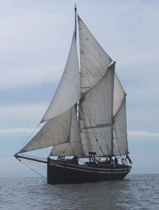
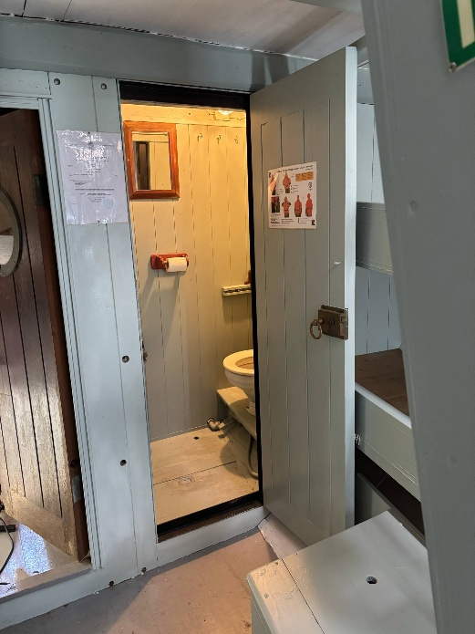
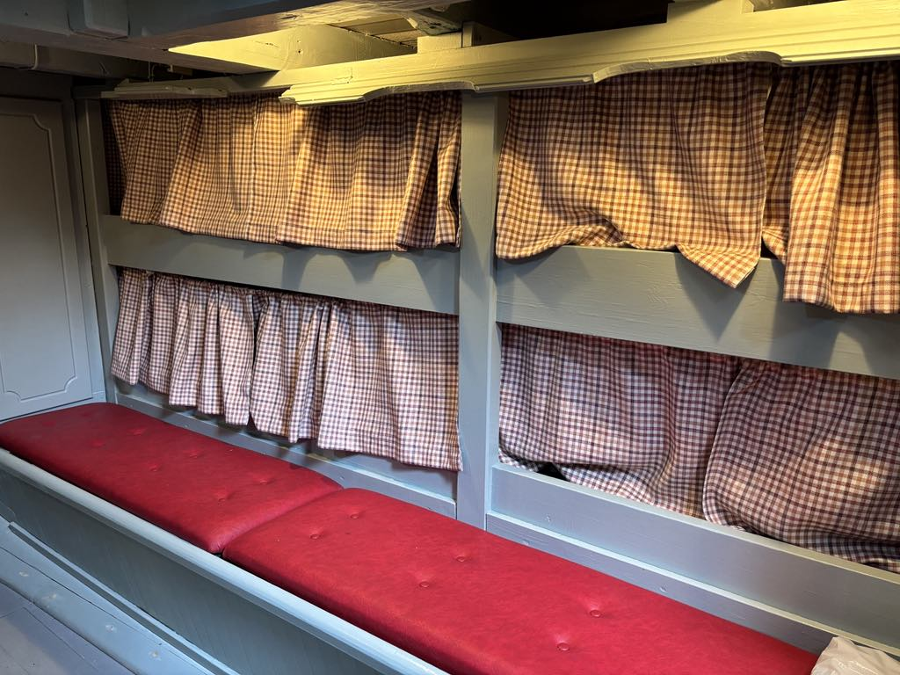

«Seladon» er ein 58 fot seglkutter bygd i Kvinnherad 1937.
Kontakt: 40403201 / geirmund.engevik@haugnett.no
I samband med Forbundet Kystens Landsstevne i Strusshavn, sommaren 2026.

Me har forskipet til utleige. Der er til saman 12 køyar, fordelt på to lugarar. I tillegg eit rom med toalett med servant.
Køyane er utstyrte med madrass. Dei som vil bu her må derfor ta med eigne køyklær eller sovepose.


Har du lyst å oppleva ekte skutemiljø, med dei fasilitetane og dei luktene som var i ei treskute i tidlegare tider, må du mønstra på Seladon.